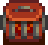
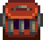

Crab Pot
| Crab Pot | |
| Place it in the water, load it with bait, and check the next day to see if you've caught anything. Works in streams, lakes, and the ocean. | |
| Information | |
| Source | Crafting • Fish Shop |
| Sell Price | |
| Crafting | |
| Recipe Source | |
| Ingredients | |
Crab Pots are floated on the shores of bodies of water (lakes, ponds, rivers, or oceans) and primed with bait to catch fish. Bait must be inserted every day. Players with the Luremaster profession don't need to add bait.
Harvesting a crab pot gives 5 Fishing experience points, even if trash is caught, the item is normally a Beach forage item, or multiple items were caught in the Crab Pot. Fish caught with crab pots also count towards the four fishing achievements (Fisherman, Ol' Mariner, Master Angler, and Mother Catch).
Crab pots can be crafted or purchased from Willy's Fish Shop for  1,500g after reaching Fishing level 3. Three crab pots are rewarded for completing the
1,500g after reaching Fishing level 3. Three crab pots are rewarded for completing the  Crab Pot Bundle in the Fish Tank. 1 Crab Pot is also one of the prizes from the Trout Derby festival.
Crab Pot Bundle in the Fish Tank. 1 Crab Pot is also one of the prizes from the Trout Derby festival.
If the player has the power from The Art O' Crabbing book, it gives Crab pots a 25% chance to yield double the amount of items.
Stages
Crab pots have three stages, which can be distinguished visually:
| Image | Description |
|---|---|
| The crab pot is empty. Without the Luremaster profession, bait must be added before it will catch anything. | |
 |
The crab pot contains bait, and will catch something the next morning. (The 'empty' image will be seen instead with the Luremaster profession.) |
 |
The crab pot caught something and can be harvested. An icon of what it contains will appear above the crab pot. |
Specialized Bait
Any type of bait can be used in a crab pot. Using certain specialized types of bait provide additional benefits compared to standard bait:[1]
- Deluxe Bait increases the quality of Crab Pot fish to silver and, if the player does not have the Mariner profession, decreases the chance of junk (from 38% to 30% in most areas).
- Wild Bait gives a 25% chance to yield double the amount of items and, if the player does not have the Mariner profession, decreases the chance of junk by the same amount as Deluxe Bait (from 38% to 30% in most areas).
- If the player does not have the Mariner profession, using any type of Targeted Bait also decreases the chance of junk by the same amount (from 38% to 30% in most areas). If a Crab Pot Fish Targeted Bait is used, it also increases the chance to catch that specific Crab Pot fish, decreasing the chance of getting other items which includes decreasing the chance of junk further, down to between 10% to 27% in most areas depending on the Targeted Bait used.
- Targeted Bait with the Mariner profession, Magnet, Magic Bait, and Challenge Bait do not provide additional benefits compared to standard bait.
Catch
The day after placing a crab pot, the following items can be found in it:
Anywhere
Unless the player has the Mariner profession, the following trash items can be obtained by putting a crab pot in any type of water. The chance of trash depends on the location and bait used. Specifically, in all areas except for the Beach Farm pond:
- If the player uses Bait, Magnet, Magic Bait, Challenge Bait, or no bait (with the Luremaster profession only), the chance of trash is 38%.
- If the player uses Deluxe Bait, Wild Bait, or Targeted Bait, the chance of trash decreases to 30%.
- The chance of trash further decreases if the player uses Targeted Bait for a specific Crab Pot fish, down to between 10% to 27% depending on the type of targeted bait used.
On the Beach Farm pond, the chance of trash increases to 57%, 40%, and 22.5-35%, respectively.
All trash items are equally likely to appear.[2] Trash can be recycled into useful items.
| Image | Name | Description | Produced from Recycling |
|---|---|---|---|
| Trash | It's junk. | ||
| Driftwood | A piece of wood from the sea. | ||
| Soggy Newspaper | This is trash. | ||
| Broken CD | It's a JojaNet 2.0 trial CD. They must've made a billion of these things. | ||
| Broken Glasses | It looks like someone lost their glasses. They're busted. |
Saltwater
The following creatures can be caught by putting a crab pot in any saltwater location.[2]
| Image | Name | Description | Sell Price | Trap Chance | Used In | |
|---|---|---|---|---|---|---|
| Non-Mariner | ||||||
| Lobster | A large ocean-dwelling crustacean with a strong tail. | 14.3% | 4.0% |
| ||
| Clam | There's a chewy little guy in there... | 14.3% | 8.7% | |||
| Crab | A marine crustacean with two powerful pincers. | 14.3% | 7.6% | |||
| Cockle | A common saltwater clam. | 14.3% | 11.9% | |||
| Mussel | A common bivalve that often lives in clusters. | 14.3% | 9.7% | |||
| Shrimp | A scavenger that feeds off the ocean floor. Widely prized for its meat. | 14.3% | 9.9% | |||
| Oyster | Constantly filters water to find food. In the process, it removes dangerous toxins from the environment. | 14.3% | 10.3% | |||
Note: If the player has the Mariner profession, the chances of obtaining each fish is equal (at 14.3%) regardless of the bait used or the body of the water the Crab Pot is placed in.
If the player does not have the Mariner profession and uses either Deluxe Bait, Wild Bait, or any type of Targeted Bait (except for Crab Pot saltwater fish), the percent chance of obtaining each Crab Pot item is multiplied by 1.125 in the table above. The table below shows the chance of getting each item if Targeted Bait for Crab Pot saltwater fish is used and the player does not have the Mariner profession.[3]
| Image | Name | % Lobster Bait | % Crab Bait | % Oyster Bait | % Clam Bait | % Shrimp Bait | % Cockle Bait | % Mussel Bait |
|---|---|---|---|---|---|---|---|---|
| Lobster | 18.0% | 4.5% | 4.5% | 4.5% | 4.5% | 4.5% | 4.5% | |
| Crab | 7.2% | 25.7% | 8.6% | 8.6% | 8.6% | 8.6% | 8.6% | |
| Oyster | 9.7% | 9.0% | 34.6% | 11.5% | 11.5% | 11.5% | 11.5% | |
| Clam | 8.3% | 7.6% | 6.3% | 29.4% | 9.8% | 9.8% | 9.8% | |
| Shrimp | 9.4% | 8.6% | 7.2% | 7.2% | 22.2% | 11.1% | 11.1% | |
| Cockle | 11.2% | 10.4% | 8.6% | 8.6% | 10.0% | 26.7% | 13.3% | |
| Mussel | 9.2% | 8.5% | 7.1% | 7.1% | 8.2% | 6.2% | 21.8% | |
| Trash | 27.0% | 25.7% | 23.1% | 23.1% | 25.2% | 21.6% | 19.3% |
Freshwater
The following creatures can be caught by putting a crab pot into any freshwater location.[2]
Farm Ponds will yield Crab Pot Fish, even ponds where a Fishing Rod can only catch trash. Crab Pots also work in all underground locations (e.g., The Sewers). The pools found in the Mines are the only exceptions. While Crab Pots can be placed in the mine’s pools, they will vanish and be permanently lost after leaving the level. Crab Pots cannot be placed into fountains (e.g., in Pelican Town or outside the Spa).
| Image | Name | Description | Sell Price | Trap Chance | Used In | |
|---|---|---|---|---|---|---|
| Non-Mariner | ||||||
| Crayfish | A small freshwater relative of the lobster. | 33.3% | 21.0% | |||
| Snail | A wide-ranging mollusc that lives in a spiral shell. | 33.3% | 20.0% |
| ||
| Periwinkle | A tiny freshwater snail that lives in a blue shell. | 33.3% | 21.5% | |||
Note: If the player has the Mariner profession, the chances of obtaining each fish is equal (at 33.3%) regardless of the bait used or the body of the water the Crab Pot is placed in.
On the Beach Farm pond, if the player does not have the Mariner profession, the percent chance of obtaining each Crab Pot item is multiplied by 0.69 in the table above, as trash is more likely to be caught there.[4] If the player does not have the Mariner profession and uses either Deluxe Bait, Wild Bait, or any type of Targeted Bait (except for Crab Pot freshwater fish), the percent chance of obtaining each Crab Pot item is multiplied by 1.125 in the table above. On the Beach Farm pond, the percent chance of obtaining each Crab Pot item chance is multiplied by 0.97 in the table above, or by 1.405 for the modified percentages, taking into account the previous 0.69 multiplier. The table below shows the chance of getting each item if Targeted Bait for Crab Pot freshwater fish is used and the player does not have the Mariner profession in all areas except for the Beach Farm pond. For the Beach Farm pond, the percent chance of obtaining each Crab Pot item is multiplied by 0.861 in the table below, with the percent chance of trash adjusted accordingly.[3]
| Image | Name | % Snail Bait | % Crayfish Bait | % Periwinkle Bait |
|---|---|---|---|---|
| Snail | 45.0% | 22.5% | 22.5% | |
| Crayfish | 15.8% | 47.3% | 23.6% | |
| Periwinkle | 16.1% | 11.1% | 43.9% | |
| Trash | 23.2% | 19.1% | 10.0% |
Gifting
| Villager Reactions
| |
|---|---|
| Hate | |
Dyeing
Crab Pot can be used in dyeing, serving as an orange dye at the dye pots, located in Emily's and Haley's house, 2 Willow Lane.
Gold per Day
Crab pots make on average  47g/day in freshwater and
47g/day in freshwater and  50.5g/day in the ocean, assuming all trash is recycled and sold. This number can be increased to about
50.5g/day in the ocean, assuming all trash is recycled and sold. This number can be increased to about  75g/day for freshwater or
75g/day for freshwater or  85g/day for the ocean if all fish that are worth less than
85g/day for the ocean if all fish that are worth less than  75g are converted into Sashimi and the Mariner profession is chosen. Note that all of these numbers are multiplied by 1.25 if the player has the power obtained from The Art O' Crabbing.[5]
75g are converted into Sashimi and the Mariner profession is chosen. Note that all of these numbers are multiplied by 1.25 if the player has the power obtained from The Art O' Crabbing.[5]
Tips
- Because the freshwater catches sell for a low value and can be easily caught in large quantities, they're ideal choices for turning into Quality Fertilizer or Sashimi. It might be helpful to put a handful of crab pots in the farm's ponds (where they're easily accessible to harvest daily) to make fertilizer/sashimi out of their catches and gain some Fishing experience.
- When the Luremaster Profession is taken, it becomes easier to accidentally pick up the crab pots. Since 1.5, this has become easier to avoid; simply target a crab pot that still contains its daily catch, and hold the collection button. As long as the button is held, the player can collect as many as they like without fear of accidentally picking up the crab pot. Since 1.6.4 this is even easier to avoid, as there is now a short delay after collecting when the crab pot cannot be picked up.
- Without the profession, the easiest way is to have the bait selected as the crab pots are emptied, easily baiting the pot right away. Baited Crab Pots cannot be picked up.
- Without the Trapper profession, the total cost of buying materials to build a crab pot is
 3,100g. With the profession, the total cost of materials is 1,300g. However, these prices more than double starting in Year 2 due to the rise in the cost of raw materials, while the purchase price from Willy's Fish Shop remains fixed at 1,500g. This makes it much more cost-effective to buy crab pots from Willy's starting in Year 2 instead of buying the ingredients, even with the Trapper profession.
3,100g. With the profession, the total cost of materials is 1,300g. However, these prices more than double starting in Year 2 due to the rise in the cost of raw materials, while the purchase price from Willy's Fish Shop remains fixed at 1,500g. This makes it much more cost-effective to buy crab pots from Willy's starting in Year 2 instead of buying the ingredients, even with the Trapper profession.
Notes
- Since the game uses a unique beach map during festival days, items a player has placed on the Beach (Crab Pots, Chests, etc.) may disappear during the Night Market. These items should return on Winter 18.
- Choosing the Luremaster profession will not bait any unbaited crab pots during the festival.
References
- ↑ See CrabPot::DayUpdate in the game code. The initial chance of junk for Deluxe Bait, Wild Bait, and Targeted Bait is 10% and if this chance does not occur, the code falls back to trash, adding 20.2% more chance of trash. This chance is lower if Crab Pot Fish Targeted Bait is used.
- ↑ 2.0 2.1 2.2 Crab pot contents are determined by CrabPot::DayUpdate. For mariners, there is no chance of junk, and all creatures are equally likely. For non-mariners, there is a 20% chance of junk, then each creature is checked sequentially using the chances specified in Fish.xnb. One result of this algorithm is that the actual chance of finding a given creature is smaller than the value in the input file, because it can only be found if junk items and all previous creatures failed their tests. If no creature is found, the code falls back to trash; this adds 18% more chance of trash (for both ocean and freshwater crab pots). Note that the order in which catches are checked is not the same as the order in the Data\Fish table (see Discussion for more details).
- ↑ 3.0 3.1 See CrabPot::DayUpdate in the game code. Each creature is checked in the same way as normal, but the chance specified in Fish.xnb is increased for the targeted fish. Specifically, it is quadrupled if the value is less than 0.1, tripled if the value is less than 0.2, and doubled otherwise. This code is skipped if the player has the Mariner profession.
- ↑ See Data\Locations.xnb in the game files. The value of CrabPotJunkChance is 0.45 for the Beach Farm pond while it is 0.2 everywhere else.
- ↑ See the calculations on the talk page.
History
- 1.0: Introduced.
- 1.01: Fixed issues regarding placing and removing crab pots.
- 1.02: Fixed more issues regarding crab pots.
- 1.4: Moving the cursor over a crab pot while holding the action button no longer incorrectly picks it up. Fixed issue where the crab pot placement cursor was always green. Fixed bug where multiple "inventory full" messages would show when harvesting from a Crab Pot with a full inventory.
- 1.4.4: Fixed issue where crab pots were rendered incorrectly in The Desert.
- 1.5.2: Fixed crash that could occur in Multiplayer when crab pots were removed by a farmhand.
- 1.5.3: Crab pots now check the professions of the player who refilled them. This fixes a case in multiplayer where a player's profession (such as Mariner) would appear to not work because the crab pot was originally placed in the water by someone else.
- 1.6: Now one of the prizes from the Trout Derby festival. Increased chance of catching junk on the Beach Farm pond. Deluxe Bait, Targeted Bait and Wild Bait now provides special benefits when catching Crab Pot fish. The power from The Art O' Crabbing gives Crab Pots a 25% chance to yield double items. Crab Pots no longer appear during the Dance of the Moonlight Jellies.
- 1.6.4: Crab pots now have a short time period (0.75 seconds) after harvesting from them during which they can’t be removed.
- 1.6.9: Fixed duplicating bait when loaded by a Hopper. Fixed not producing double catches correctly with Wild Bait. Fixed not applying Deluxe Bait and Wild Bait bonuses in some cases.
| Tools | |
|---|---|
| Basic | Axes • Golden Scythe • Iridium Scythe • Hoes • Pans • Pickaxes • Scythe • Trash Cans • Watering Cans |
| Fishing | Training Rod • Bamboo Pole • Fiberglass Rod • Iridium Rod • Advanced Iridium Rod • Crab Pot |
| Other | Auto-Grabber • Auto-Petter • Hay Hopper • Heater • Incubator • Milk Pail • Ostrich Incubator • Shears |